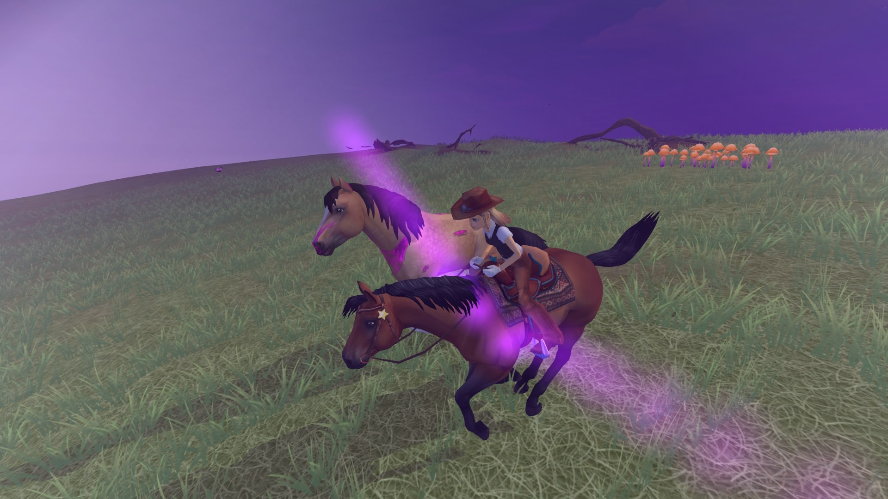
Voit nyt opetella Riannan johdolla muinaista ratsastustaitoa, jota kutsutaan ”sieluratsastukseksi”.
Sieluratsastus ammentaa taikavoimansa ratsastajan ja hänen ratsunsa välisestä siteestä, ja sen avulla voit auttaa tietäjiä suojelemaan Jorvikia vaarallisilta voimilta,
kuten Pandorialta tai Pimeyden ytimeltä!
Voit valita tietäjien hevoshaan ilmoitustaululta erityisiä harjoituksia, ja kun olet kehittynyt riittävästi, Rianna laajentaa koulutustasi lähettämällä sinut suorittamaan erityistehtäviä eri puolelle Jorvikia ja saat saarta suojelemalla erilaisia palkintoja.
| 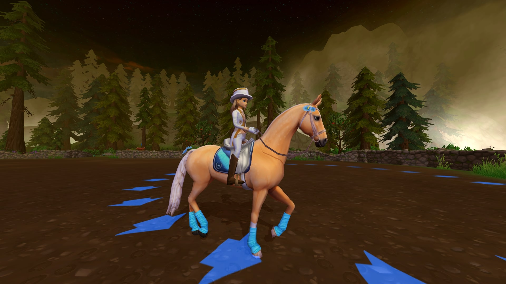 |
TarkkuusratsastusTarkkuusratsastuksessa tehtävänäsi on ratsastaa annetut reitit nuolia seuraamalla mahdollisimman tarkasti ennen kuin aika kuluu umpeen. Epäonnistut tehtävässä mikäli et ratsasta tarkasti annettujen ohjeiden mukaan. |
| 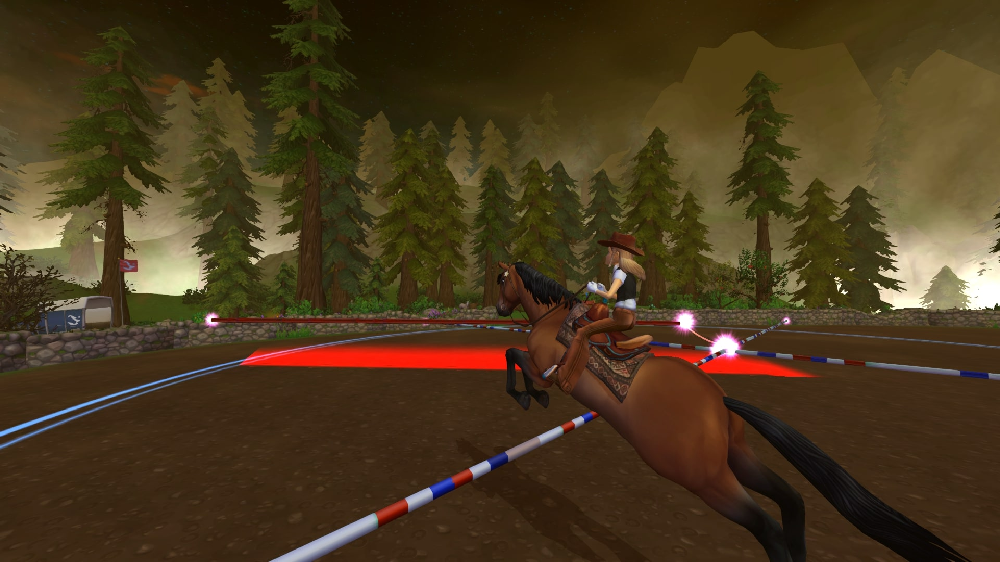 |
EstekaruselliEstekarusellissa tehtävänäsi on ratsastaa kehää ympäri esteitä hypäten ja punaista puomia vältellen. Helpoimmin onnistut kevyessä laukassa ulkoreunalla ratsastaen. Epäonnistut tehtävässä mikäli kosketat esteeseen tai punaiseen valopuomiin. |
| 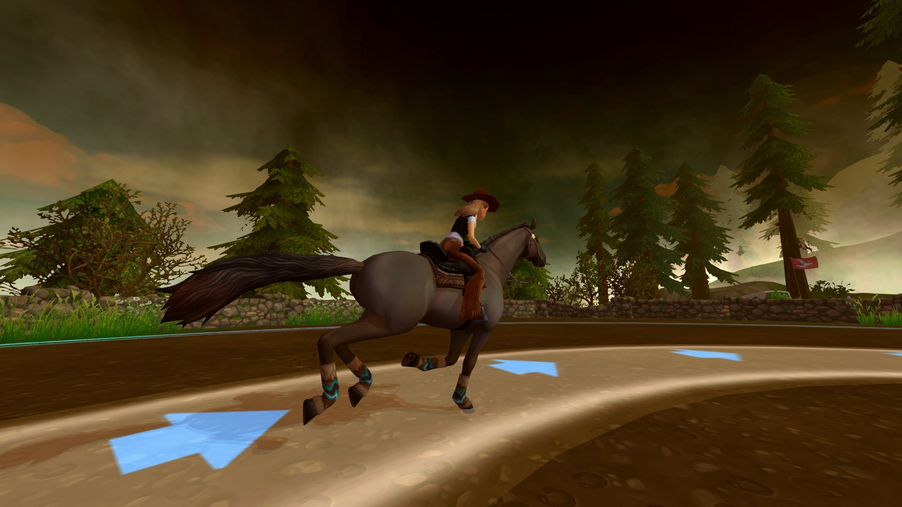 |
Ratsastusreitin vaihtaminenTehtävänäsi on ratsastaa merkityllä reitillä ja vaihtaa reittiä kun kuulet äänimerkin ja ruudulle ilmestyy teksti "*pelaaja* vaihda kaistaa nyt!" Epäonnistut tehtävässä mikäli vaihdat reittiä liian hitaasti. |
| 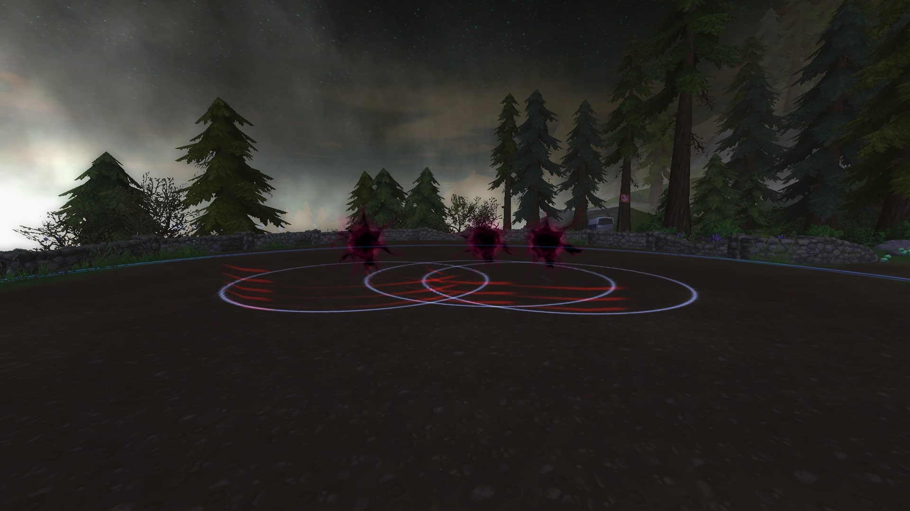 |
Varjojen välttelyTehtävänäsi on vältellä varjoja kunnes annettu aika kuluu umpeen. Epäonnistut tehtävässä mikäli kosketat varjoa. |
| 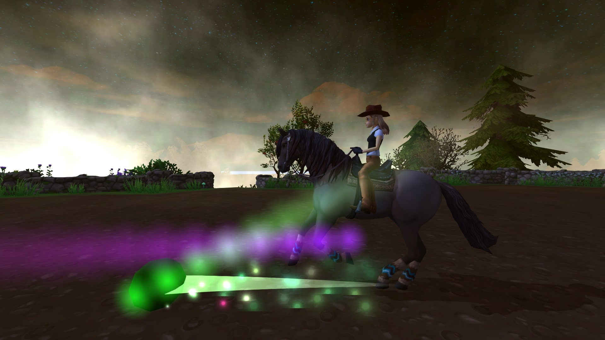 |
Kohteen perässä pysyminenTehtävänäsi on seurata kohdetta mahdollisimman lähellä. Helpoimmin onnistut hitaassa laukassa hieman kohteen perässä tai vierellä. Epäonnistut tehtävässä mikäli et saa kohteen "paniikki-/turmeltumistasoa" alas ennen ajan päättymistä. |
| 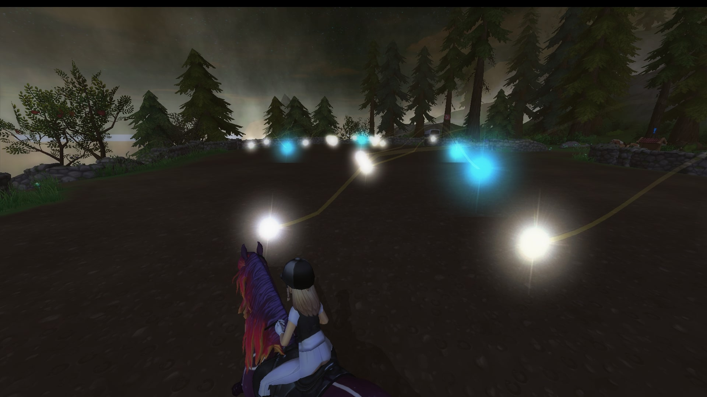 |
Haamuvalojen kerääminenTehtävänäsi on kerätä 20 haamuvaloa ennen kuin aika kuluu umpeen. Epäonnistut tehtävässä mikäli et saa kerättyä kahtakymmentä haamuvaloa ennen ajan päättymistä. |
| 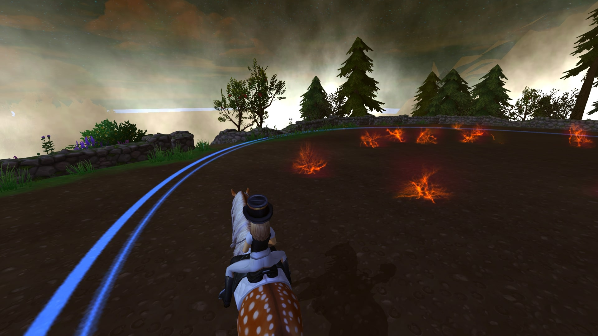 |
Salamoiden väistelyTehtävänäsi on vältellä maahan ilmestyviä liekkejä kunnes annettu aika päättyy. Tehtävä on helpointa suorittaa laukkaamalla hitaasti lähellä kehän reunaa. Epäonnistut tehtävässä mikäli osut liekkiin. |
| 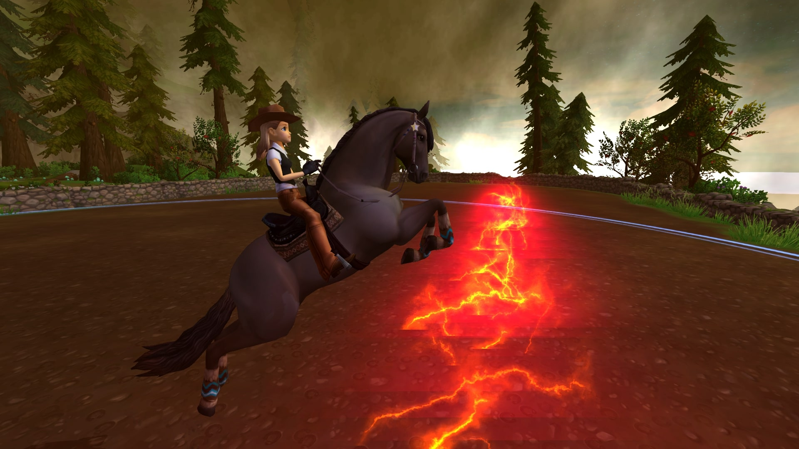 |
Paineaaltojen väistelyTehtävänäsi on vältellä liekkejä. Suoritat tehtävän helpoiten laukkaamalla kehän keskiosassa ja hyppäämällä aaltojen yli kun ne tulevat lähemmäs. Epäonnistut tehtävässä mikäli osut liekkiin. |
| 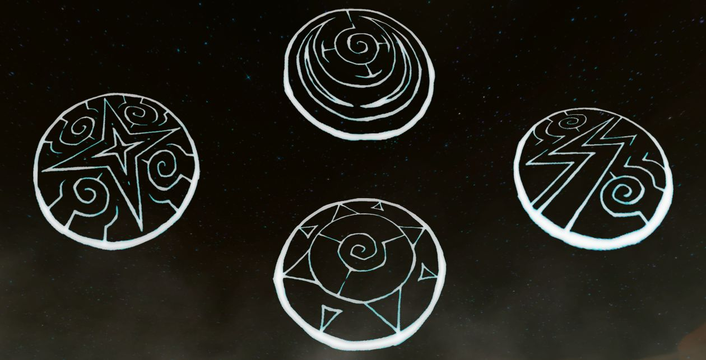 |
Valitse symboliTehtävänäsi on juosta annetun symbolin päälle ennen kuin aika kuluu umpeen. Tehtävä on suoritettu kun olet valinnut oikein kahdeksan symbolia. Epäonnistut tehtävässä mikäli et ehdi annetun symbolin luo annetun ajan puitteissa, tai valitset väärän symbolin. |
| 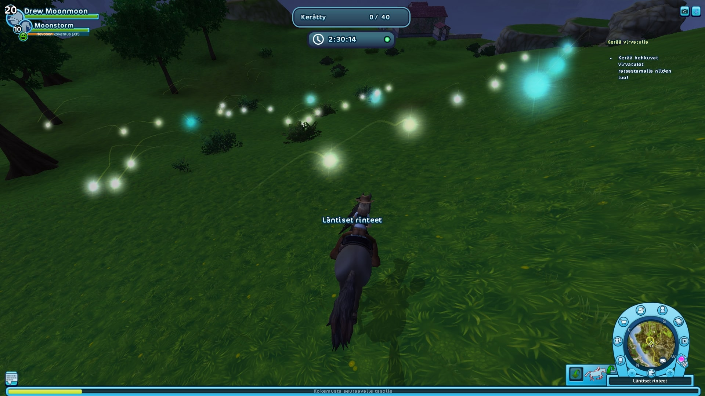 |
Kerää virvatuliaTehtävänäsi on kerätä 40 virvatulta ennenkuin aika päättyy. Epäonnistut tehtävässä mikäli et kerää kaikkia virvatulia ennen ajan päättymistä. |
| 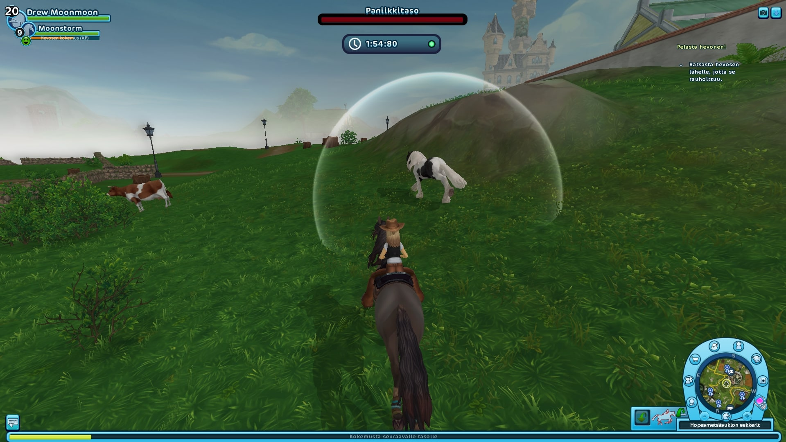 |
Pelasta hevonen!Tehtävänäsi on rauhoitella pelästynyt hevonen juoksemalla sen vierellä kunnes paniikkitaso-palkki on tyhjä. Epäonnistut tehtävässä mikäli et suorita tehtävää ennen ajan päättymistä. |
| 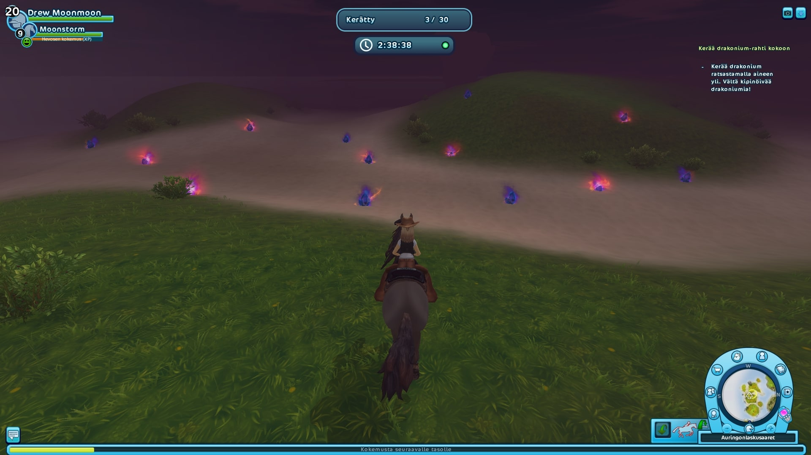 |
Kerää Drakonium-rahtiTehtävänäsi on kerätä 30 drakonium-kiveä. Välttele kipinöiviä kiviä, ja kerää tummansiniset kivet jotka eivät säkenöi. Epäonnistut tehtävässä mikäli et kerää kolmeakymmentä kiveä ennen ajan päättymistä. Jokaisesta osumasta kipinöivaan kiveen menetät 20 sekuntia. |
| 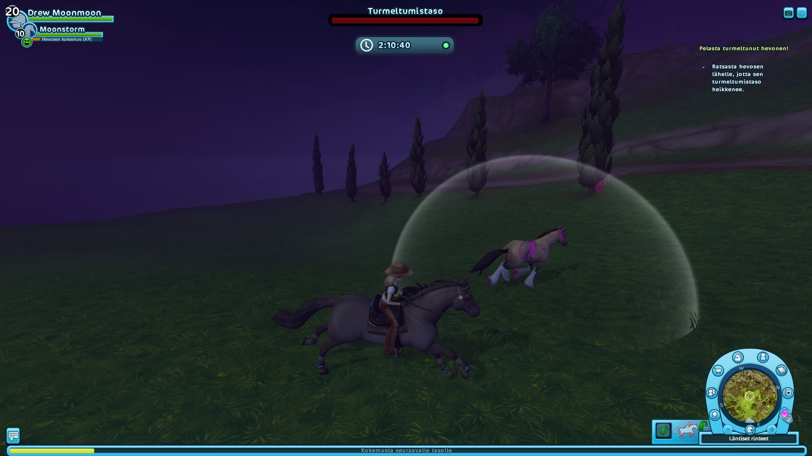 |
Pelasta turmeltunut hevonen!Tehtävänäsi on pelastaa turmeltunut hevonen ennen kuin aika kuluu umpeen. Tämä hevonen juoksee todella nopeaa! Samalla kun juokset hevosen vierellä sinun pitää väistellä kipinöitä tai varjoja. Epäonnistut tehtävässä mikäli et saa pelastettua hevosta ennen ajan päättymistä. Jokaisesta osumasta kipinöivään kiveen menetät 20sec. Jos osut varjoon, se lähtee seuraamaan sinua, toisesta osumasta menetät 20 sekuntia. |
| 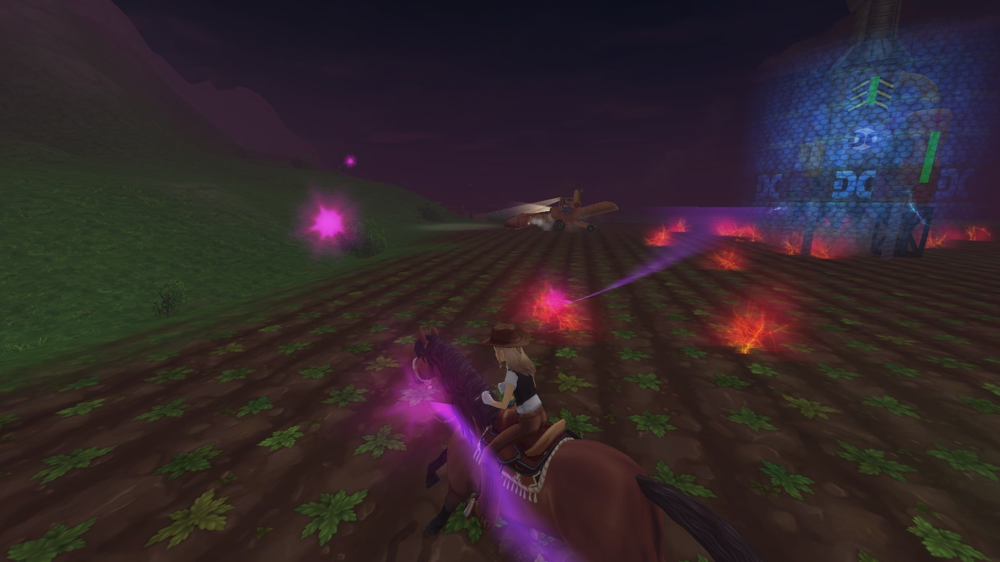 |
Sulje Pimeyden ytimen koneTehtävänäsi on kerätä 4 violettia valopalloa ja iskeä Pimeyden ytimen konetta. Samalla sinun täytyy vältellä kipinöitä, varjoja tai droneja. Kun olet iskenyt konetta kolme kertaa olet suorittanut tehtävän. Epäonnistut tehtävässä mikäli et saa konetta rikki annetun ajan puitteissa. Osuma kipinään vie sinulta 20 sekuntia. Ensimmäinen osuma varjoon tai droneen saa sen seuraamaan sinua, toisella iskulla menetät 20 sekuntia. |
| 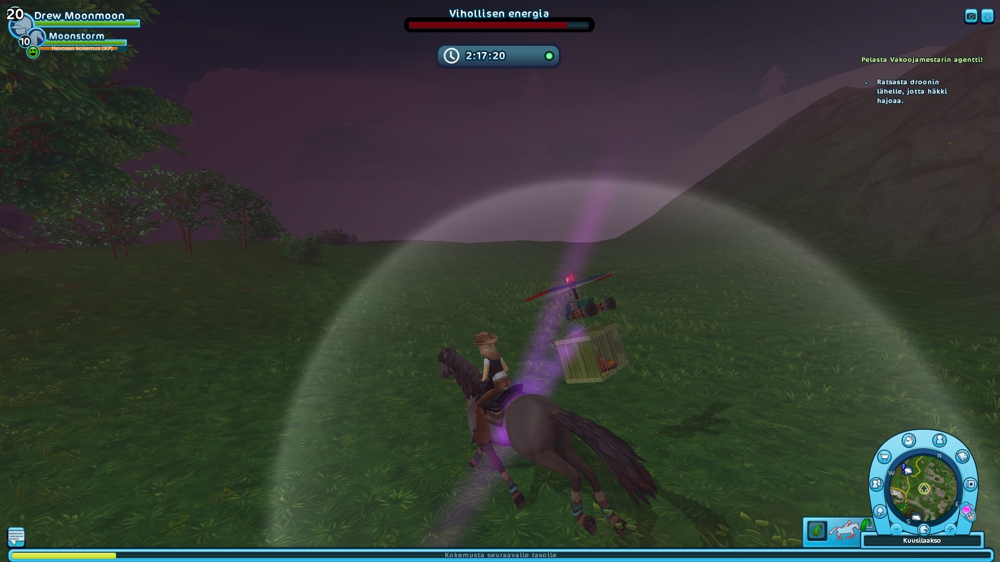 |
Pelasta vakoojamestarin agentti!Tehtävänäsi on pelastaa vakoojamestarin agentti ennen kuin aika kuluu umpeen. Tämä drone tekee nopeita käännöksiä! Samalla kun juokset dronen vierellä sinun pitää väistellä kipinöitä tai varjoja. Epäonnistut tehtävässä mikäli et saa pelastettua agenttia ennen ajan päättymistä. Jokaisesta osumasta tuleen menetät 20sec. Jos osut varjoon, se lähtee seuraamaan sinua, toisesta osumasta menetät 20 sekuntia. |
| 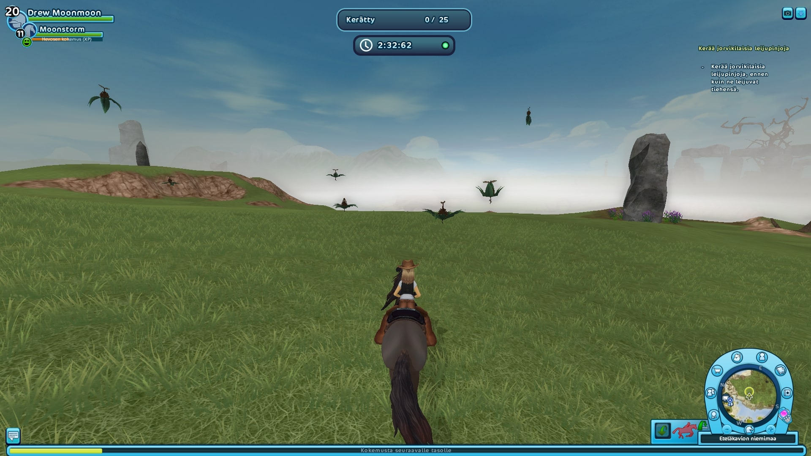 |
Kerää jorvikilaisia leijupinjojaTehtävänäsi on kerätä 25 leijupinjaa ennen kuin aika kuluu umpeen. Etsi leijupinjoja jotka ovat vielä maassa tai juuri lähtemässä lentoon ja ratsasta niiden yli. Epäonnistut tehtävässä mikäli et saa kerättyä kahtakymmentäviittä leijupinjaa ennen kuin aika kuluu loppuun. |
| 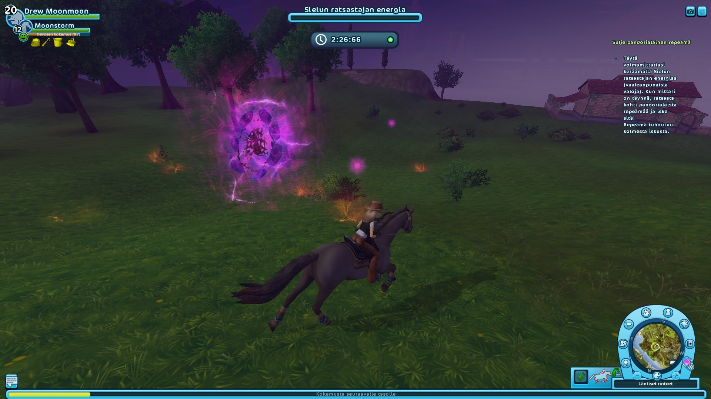 |
Sulje pandorialainen repeämäTehtävänäsi on kerätä 4 violettia valopalloa ja iskeä pandorialaista portaalia. Samalla sinun täytyy vältellä kipinöitä, varjoja tai droneja. Kun olet iskenyt portaalia kolme kertaa olet suorittanut tehtävän. Epäonnistut tehtävässä mikäli et saa portaalia suljettua annetun ajan puitteissa. Osuma kipinään vie sinulta 20 sekuntia. Ensimmäinen osuma varjoon tai droneen saa sen seuraamaan sinua, toisella iskulla menetät 20 sekuntia. |
| 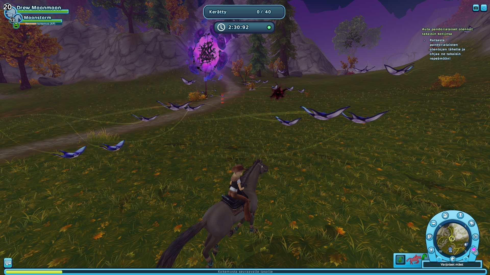 |
Auta pandorialaiset olennot takaisin kotiinsaTehtävänäsi on kerätä 40 rauskua ja vältellä varjoja. Epäonnistut tehtävässä mikäli et saa neljääkymmentä rauskua kerättyä annetun ajan puitteissa. Ensimmäinen osuma varjoon saa sen seuraamaan sinua, toisella iskulla menetät 20 sekuntia. |
| Pisteet | Kuvaus | |
|---|---|---|
| 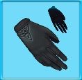 | 500 |
Pohjoisen tietäjän hansikkaat (Ratsastaa +4 Ohjaus +4 Huolenpito +1 ) |
| 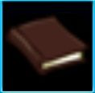 | 1000 | Kirja |
| 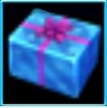 | 3000 | Paketti |
| 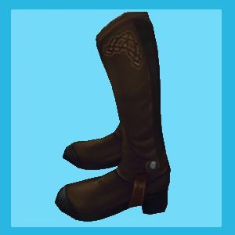 | 5000 |
Pohjoisen tietäjän kengät (Ratsastaa +4 Hyppääminen +4) |
| 10 000 | Lisätehtäviä ilmoitustaululle | |
| 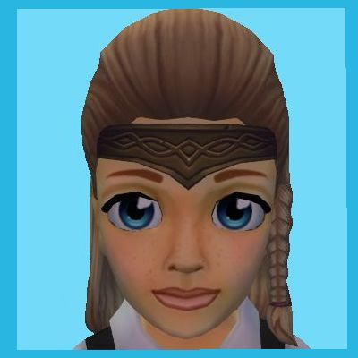 | 13 000 |
Pohjoisen tietäjän otsanauha (koriste) |
| 15 000 | paketti | |
| 17 000 | Kertomusten kirja | |
| 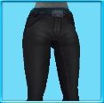 | 20 000 |
Pohjoisen tietäjän housut (Ratsastaa +5 Hyppääminen +5 Ohjaus +3) |
| 25 000 | Paketti | |
| 27 000 | Kirja | |
| 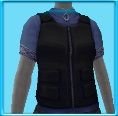 | 30 000 |
Pohjoisen tietäjän takki (Ratsastaa +8 Hyppääminen +1 Ohjaus +4) |
| 33 000 | Kirja | |
| 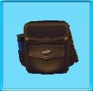 | 35 000 | Pohjoisen tietäjän satulalaukku |
| 40 000 | Kirja | |
| 42 000 | Paketti | |
| 45 000 | Kirja | |
| 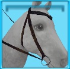 | 50 000 |
Pohjoisen tietäjän suitset (Nopeus +3 Ketteryys +1) |
| 53 000 | Paketti | |
| 56 000 | Kirja | |
| 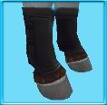 | 60 000 | Pohjoisen tietäjän pintelit |
| 65 000 | Paketti | |
| 70 000 | Kirja | |
| 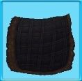 | 80 000 |
Pohjoisen tietäjän satulahuopa (Nopeus +3 Ketteryys +1) |
| 82 000 | Paketti | |
| 85 000 | Kirja | |
| 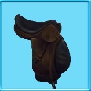 | 90 000 |
Satula (Voima +1 Nopeus +3 Ketteryys +2) |
| 95 000 | Paketti | |
| 100 000 | Kirja | |
| 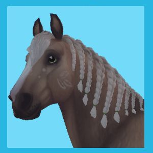 | 120 000 | Riimukirmaaja |


© Copyright 2019-2021. "SSO-Suomi" by Moon Moon. Star Stable Online game content and materials are trademarks and copyrights of their respective owners. This site is a fansite and is not affiliated with the game publisher.